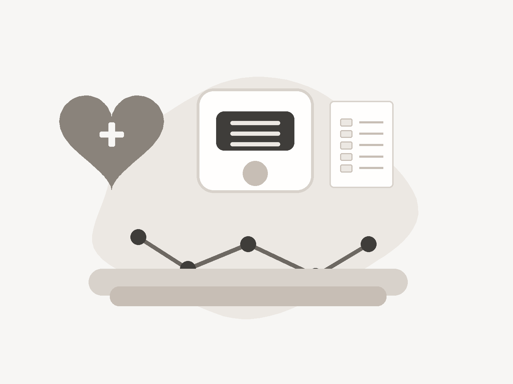
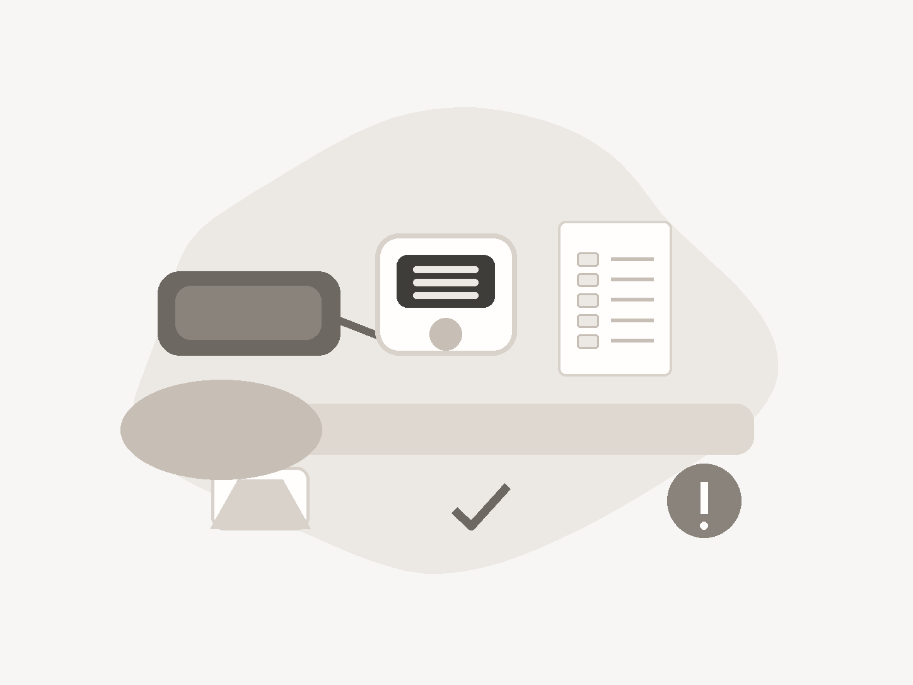
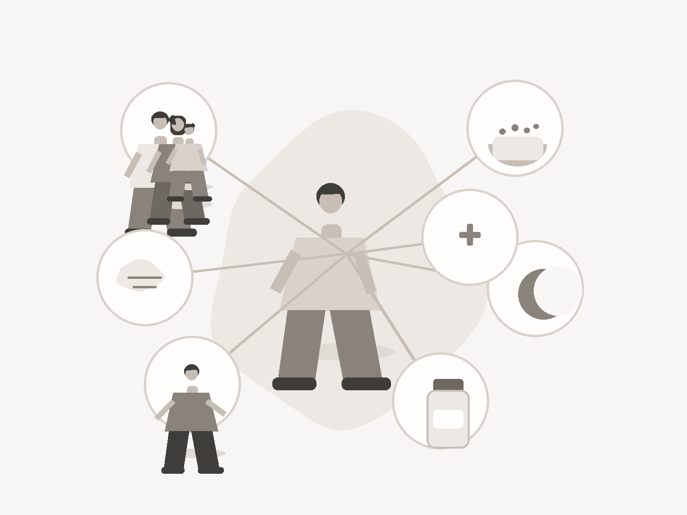
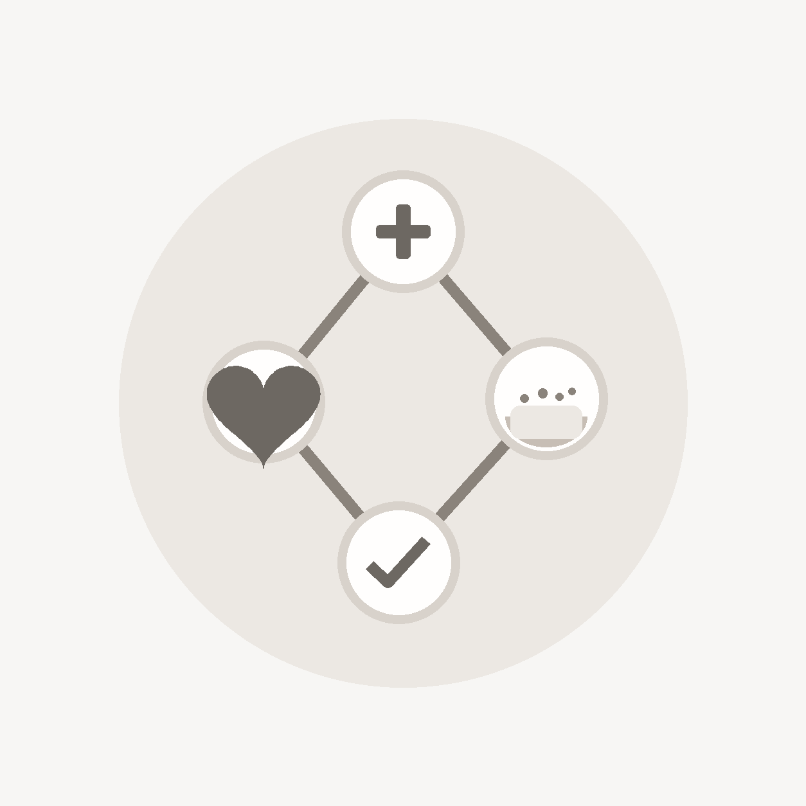
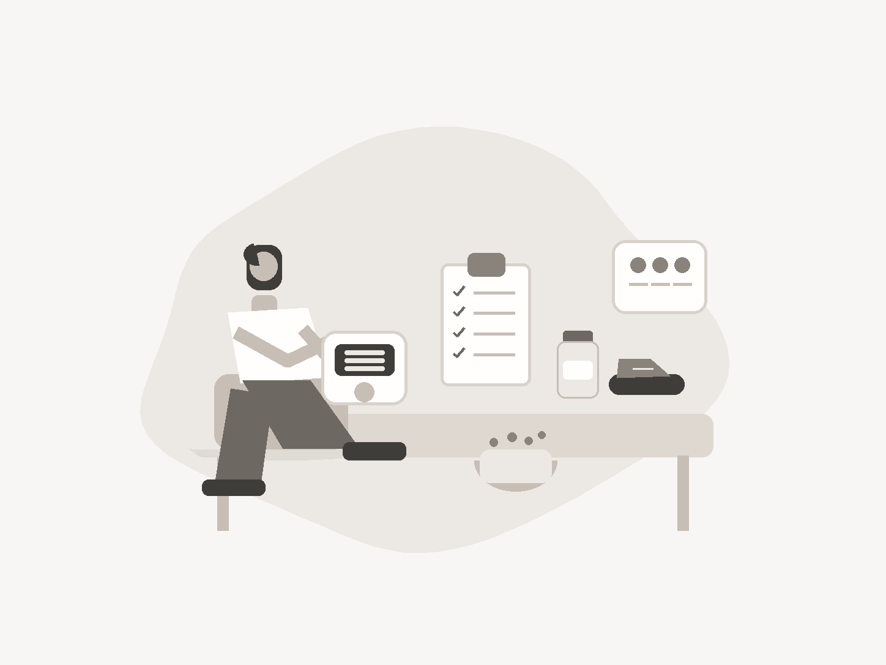
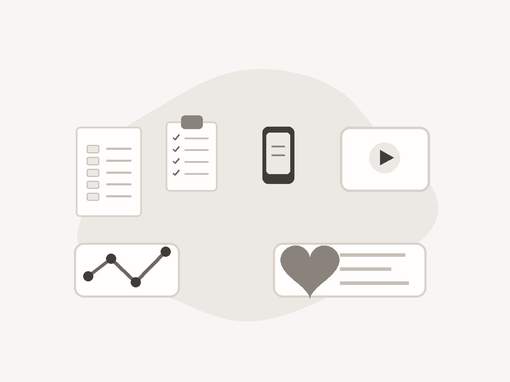
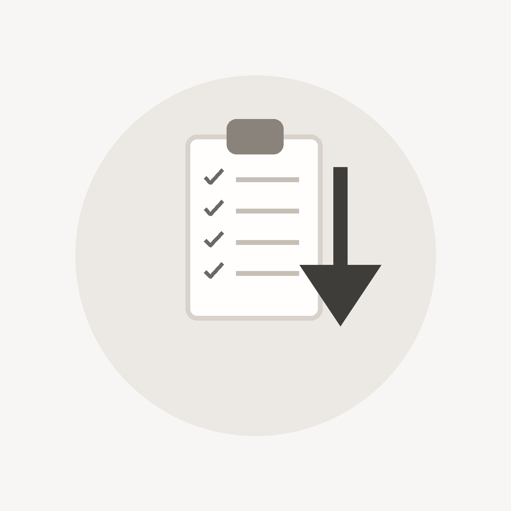

01
Overview
Start with the basics.
Blood pressure is the force of blood pushing against the walls of your arteries. It changes during the day, but when it stays high over time, it can put extra strain on the heart, brain, blood vessels, kidneys, and eyes.
High blood pressure is also called hypertension. It is common, often silent, and manageable. This guide explains what the numbers mean, what needs quick attention, and why repeated readings matter more than one isolated result.
The goal is to help you understand the condition clearly enough to have a better conversation with your care team. For someone helping a family member or friend, it also gives a shared language for readings, symptoms, care routines, and follow-up.

What the numbers mean
High blood pressure is not usually something you can feel. It is something you measure.
- Systolic pressure is the top number.
- Diastolic pressure is the bottom number.
- The unit is mm Hg.
- Your care team looks at patterns over time, not one number by itself.
Key facts
- High blood pressure often has no symptoms.
- Your numbers matter even when you feel well.
- One high reading is not always a diagnosis.
- Repeated high readings should be checked.
- Medication may be part of care. That is common.
- Very high readings with symptoms need emergency care.
Numbers at a glance
| Category | Top number | Bottom number |
|---|---|---|
| Normal | Less than 120 | And less than 80 |
| Elevated | 120 to 129 | And less than 80 |
| Stage 1 high blood pressure | 130 to 139 | Or 80 to 89 |
| Stage 2 high blood pressure | 140 or higher | Or 90 or higher |
| Very high | Higher than 180 | And/or higher than 120 |
Reading tool
Blood pressure reading helper
Enter one reading to see where it falls and what to do next. This helps you prepare for a conversation with your care team. It does not diagnose high blood pressure.
Only a qualified health professional can diagnose high blood pressure or evaluate low blood pressure. If you feel seriously unwell, do not wait to use this tool.
Why it matters
Uncontrolled high blood pressure can quietly damage blood vessels over time. That can raise the chance of stroke, heart attack, heart failure, kidney problems, vision loss, and other cardiovascular problems.
Common misunderstandings
- Feeling well does not rule out high blood pressure.
- Medication is a common part of care.
- Blood pressure and heart rate are different measurements.
Watch: Blood pressure numbers in 60 seconds
A short animated explainer shows the cuff, the two numbers, and why repeated readings matter more than one isolated result.
Go deeper
Understand the basics in more detail
The overview gives the core orientation. These pages would let someone slow down around the numbers, clear up common confusion, or understand why blood pressure control matters over time.
Read the numbers
Start here when the main question is what the top number, bottom number, and range mean.
Clear up common confusion
Use these when someone feels well, has heard conflicting advice, or is not sure what matters most.
Why control matters
Go here when someone wants the reason behind long-term care, even when symptoms are not obvious.
Questions people ask
Is high blood pressure the same as hypertension?
Yes. Hypertension is the medical term for high blood pressure.
Can I have high blood pressure and feel normal?
Yes. Many people with high blood pressure do not notice symptoms. That is why checking your numbers matters.
Does one high reading mean I have high blood pressure?
Not always. A single reading can be affected by stress, pain, activity, caffeine, tobacco, timing, or cuff fit. A health care professional can help confirm whether your readings show a pattern.
Why does this matter if I feel okay?
High blood pressure can strain blood vessels and organs over time, even when you do not feel different.
02
Signs
Know what to check.
High blood pressure is often silent. For many people, the first useful sign is a measured reading, not a symptom they can feel. That is why checking correctly, recording the result, and watching patterns matters.
Use this section to understand readings, notice serious symptoms, and know when a number needs quick attention. It is also useful for caregivers who may be helping someone measure at home, keep a log, or decide when a call cannot wait.
Symptoms such as chest pain, shortness of breath, weakness, vision changes, or trouble speaking should be taken seriously. A reading is important, but how someone feels can change the level of urgency.

Why signs, not just symptoms
Symptoms are what you feel. Signs are broader. A sign can be measured, seen, or noticed by someone else.
That matters because you may feel normal while your reading is high. It also helps caregivers know what to track.
How to take a reading
- Use a validated upper-arm monitor when possible.
- Sit still with your back supported and feet flat.
- Keep your arm supported at heart level.
- Avoid smoking, exercise, or caffeine for at least 30 minutes beforehand.
- Write down the reading, time, and any symptoms or missed doses.
When a reading may be urgent
If a reading is higher than 180/120 mm Hg, wait at least one minute and take it again.
- If it is still that high and you have serious symptoms, call 911.
- If it is still that high without serious symptoms, contact your health care professional right away.
Call 911 if a very high reading comes with
- Chest pain
- Shortness of breath
- Back pain
- Numbness or weakness
- Vision changes
- Difficulty speaking
- Confusion or fainting
What to track
- Recent readings
- Time of day
- Medicines taken or missed
- New symptoms
- Caffeine, alcohol, tobacco, stress, sleep, or activity changes
- Questions for your care team
Quick reading log
Bring a simple pattern to your next visit. A few clear readings are usually more useful than one number from memory.
| Date and time | Top | Bottom | Pulse | Medicines taken? | Symptoms or notes |
|---|---|---|---|---|---|
| Today, morning | __ | __ | __ | Yes / No / Not prescribed | Caffeine, stress, sleep, pain, missed dose, or symptom note |
| Today, evening | __ | __ | __ | Yes / No / Not prescribed | What was different from the morning? |
| Next check | __ | __ | __ | Yes / No / Not prescribed | Question to bring to the care team |
For step-by-step help, go to Home Blood Pressure Monitoring.
Caregiver note
If you care for someone with high blood pressure, help them keep a reading log, notice changes, and prepare questions. If they have a very high reading with serious symptoms, call emergency services.
Go deeper
When a reading needs more context
The first read of this section helps people act in the moment. These deeper pages would help them understand the number, measure more consistently, and know when symptoms or repeat readings should change what they do next.
Understand the reading
Use these when someone has a number in front of them and needs plain-language context.
Measure at home
Home readings are only useful when the setup, timing, and recording are clear.
Know when to act
Use these when the reading is very high, symptoms are present, or someone is deciding whether to call.
Step-by-step: How to take a home reading
See how posture, cuff placement, arm height, and timing can affect a home reading.
Questions people ask
Why do I feel fine if my reading is high?
High blood pressure often develops without obvious symptoms. Feeling fine does not mean the pressure inside the arteries is in a healthy range.
What number needs attention?
Ask your health care professional what goal is right for you. A reading higher than 180/120 mm Hg needs attention right away, especially if it stays high after you recheck it or comes with serious symptoms.
Should I check my blood pressure at home?
Home monitoring can be useful for many people. Ask your care team how often to check, what device to use, and what numbers should prompt a call.
What should I bring to an appointment?
Bring your reading log, medication list, questions, and notes about symptoms or missed doses.
How can I help someone else check their pressure?
Help them sit comfortably, use the cuff correctly, stay quiet during the reading, and write the result down. Do not diagnose from one reading.
03
Causes
Understand what may play a part.
High blood pressure usually does not have one simple cause. Age, family history, health conditions, medicines, sleep, stress, access to care, and daily routines can all play a part. Some influences are medical, some are environmental, and some are part of everyday life.
You cannot change every risk factor. You can still use the pattern to make the next conversation more specific and less frustrating. The point is not to blame one choice or one person, but to understand what may be contributing and what can realistically be addressed.
This section is especially useful when readings stay high, change suddenly, or do not improve as expected. It can help patients, caregivers, and clinicians look at the same picture: health history, medicines, routines, barriers, and the questions worth bringing to a visit.

Use causes as clues, not blame
Prepare for a better conversation. Notice what may apply, track what you can, and ask your care team what matters most for you.
Body and background factors
Some risk factors cannot be changed. They still matter because they can help guide how closely to watch your readings and when to ask for support.
- Age: blood vessels can become stiffer over time, which can raise pressure.
- Family history: high blood pressure can run in families, even when daily habits are strong.
- Race and lived health inequities: risk can be shaped by access, stress, care quality, and social conditions, not individual effort alone.
- Pregnancy history: high blood pressure during pregnancy can matter for future heart and blood vessel risk.
- Childhood or lifelong factors: early health conditions, weight changes, sleep patterns, and access to care can shape adult risk.
Daily patterns that can move readings
Daily habits are not about blame. They are places where small, steady changes can help. The best first step is usually the one you can repeat.
- Food pattern: fruits, vegetables, whole grains, beans, and lower-sodium foods can support blood pressure care.
- Sodium: restaurant food, packaged food, sauces, breads, and deli meats can add up quickly.
- Movement: regular activity can help, even when you start small.
- Alcohol and tobacco: both can affect blood pressure and overall heart risk.
- Stress and sleep: stress can affect routines, hormones, sleep, medication timing, and short-term readings.
- Medication routine: missed doses, side effects, cost, or unclear instructions can make readings harder to control.
Health conditions to ask about
Some conditions can raise blood pressure or make it harder to manage. If your readings stay high, ask whether any of these may be part of the picture.
- Diabetes
- Kidney disease
- Sleep apnea
- Thyroid or adrenal conditions
- Blood pressure problems during pregnancy
- Some heart and blood vessel conditions
Medicines and substances to review
Some prescription medicines, over-the-counter medicines, supplements, pain relievers, decongestants, stimulants, alcohol, and tobacco can affect blood pressure.
Do not stop a medicine on your own. Bring the full list to a clinician or pharmacist and ask what may be affecting your readings.
Make care fit real life
Cost, transportation, work schedules, food access, stress, caregiving responsibilities, language, trust, and appointment access can all affect care.
If care is hard to follow, say so. That is part of what your care team can help solve.
What to bring up at a visit
If your readings stay high or change suddenly, bring a clear picture of what has been happening. This helps your care team look for patterns, contributors, and practical barriers.
Health history
- Family history of high blood pressure, stroke, heart attack, kidney disease, or diabetes.
- Blood pressure problems during pregnancy.
- Kidney disease, diabetes, sleep apnea, thyroid conditions, or other diagnoses.
Medicines and routines
- Prescription medicines, over-the-counter products, supplements, and pain relievers.
- Missed doses, side effects, refill problems, or unclear instructions.
- Alcohol, tobacco, caffeine, sleep, stress, and recent changes in activity or food.
Questions worth asking
- Could another condition, medicine, or supplement be contributing?
- Is my cuff size and measuring technique correct?
- What reading should prompt a call?
Go deeper
Go deeper on what may be contributing
Causes are not a blame model. They are a way to understand risk, choose practical next steps, and know when a more specific health situation needs its own detail.
What raises risk
Use these pages when the question is why blood pressure may be high and what influences it.
Ways to improve it
These pages turn possible contributors into practical, everyday actions people can take.
Health situations to know about
Some circumstances, age groups, or health conditions need more specific context than a general section can carry.
Diagram: What can contribute

See how family history, health conditions, medicines, daily routines, stress, sleep, and access to care can connect.
Questions people ask
Did I cause my high blood pressure?
High blood pressure is usually shaped by many factors. Some can be changed and some cannot. The goal is not blame. The goal is to find what can help now.
Does family history matter?
Yes. Family history can raise risk, but it does not mean nothing can be done.
Can stress cause high blood pressure?
Stress can affect habits, sleep, hormones, and short-term readings. Stress support may be one helpful part of care.
Can medicines raise blood pressure?
Some medicines and supplements can affect blood pressure. Ask a clinician or pharmacist if you are unsure.
Why are there separate pages for Black adults or children and teens?
Some people need more specific guidance because risk, access, age, pregnancy history, and lived experience can change what care should consider.
04
Care
Know what care can include.
Care is the mix of treatment, monitoring, follow-up, daily habits, and support that helps keep blood pressure in a safer range. It may include medication, home monitoring, food changes, movement, and regular conversations with your care team.
For many people, care is not one dramatic change. It is a set of decisions and routines that need to work in real life: the right blood pressure goal, a way to check progress, medication when needed, and support for barriers such as cost, side effects, food access, work schedules, or stress.
This section is written for repeat use. It helps patients understand what care can include, helps caregivers know where support may be useful, and helps professionals see which plain-language explanations the page is giving before a visit or follow-up.

What care may include
Care usually brings several things together. Your health care professional can help decide what applies to you.
Medication basics
Medication is sometimes needed to protect the heart, brain, blood vessels, kidneys, and eyes. If medication is prescribed, take it as directed and ask what side effects to watch for.
Do not stop, skip, or change medication without talking with your health care professional. Ask a clinician or pharmacist before starting over-the-counter medicines, supplements, pain relievers, or decongestants.
Daily habits that can support care
- Eat more vegetables, fruits, whole grains, beans, lentils, nuts, seeds, fish, and other heart-healthy foods.
- Compare labels and choose lower-sodium options when you can.
- Ask whether potassium-rich foods are right for you.
- Move more in ways you can keep doing.
- Limit or avoid alcohol.
- Get support for stress, sleep, tobacco, medication routines, and follow-up.
Home monitoring
Home readings can show patterns between visits. They do not replace regular care, and they should not be used to change medication without guidance.
- Use a validated device.
- Check at a consistent time if your care team recommends it.
- Take readings as instructed.
- Record the date, time, and numbers.
- Note symptoms, missed doses, or unusual stress.
- Share the pattern, not just the highest number.
Follow-up and adjustment
Blood pressure care often changes over time. Readings, side effects, other conditions, pregnancy, age, access to food, cost, and stress can all change what support is needed.
- Ask what range your care team wants you to aim for.
- Ask when to call about a reading.
- Bring medication, supplement, and side-effect questions.
- Share barriers early, especially cost, access, transport, or work schedules.
If you are helping someone else
- Help organize readings, medicines, and appointment notes.
- Ask what number should prompt a call.
- Learn the emergency signs.
- Help with one realistic routine at a time, not ten at once.
- Make tracking, refills, appointments, and meals easier without taking over.
If care is hard to keep up with
Care has to fit real life. If cost, side effects, transportation, food access, stress, work hours, or caregiving demands get in the way, bring that up.
- Ask whether there is a lower-cost medicine option.
- Ask what side effects should prompt a call.
- Ask which daily factor matters most for your readings right now.
- Ask what support is available for cost, transport, food access, language, or follow-up.
If readings stay high
Some people need a medication adjustment, checks for other causes, or specialist guidance. If readings stay high, it does not mean you failed or that care is pointless.
- Share the full reading pattern with your care team.
- Check whether the cuff size and technique are correct.
- Ask whether other medicines or conditions may be contributing.
- Ask whether resistant hypertension guidance applies.
Go deeper
Build out the parts of care
Care often works best when people understand the different parts, not just one instruction. These deeper pages would help explain treatment, daily routines, and the support that makes follow-through possible.
Treatment and follow-up
Use these when medication, side effects, appointments, or care-team roles need more explanation.
Daily actions that support care
These pages translate care into food, movement, stress, sleep, tobacco, and alcohol decisions.
Healthy living hubs
Use these when someone wants broader support beyond the condition-specific care section.
Watch: Three ways to start lowering blood pressure
Three short modules help you start with food, movement, and a medication or reading routine.
Questions people ask
Can lifestyle changes really lower blood pressure?
For many people, daily habits can help. Some people also need medication. What is right for you depends on your numbers, risk, health history, and what you can realistically maintain.
Will I need medication forever?
Not everyone needs the same care. Do not stop or change medication on your own. Talk with your health care professional about your readings, side effects, and goals.
What if I miss a dose?
Follow the instructions from your care team or pharmacist. If you are not sure what to do, ask. Do not double up unless a clinician tells you to.
What food change should I start with?
Start by noticing sodium. Compare labels, choose lower-sodium options when you can, and add heart-healthy foods you already like.
How much activity do I need?
Many adults aim for regular moderate activity, but small starts still count. Ask what is safe for you if you have symptoms, other conditions, or have been inactive.
What if my blood pressure stays high even with care?
Tell your health care professional. Some people need medication changes, checks for other causes, or specialist guidance.
How can a caregiver help without taking over?
Help with logs, reminders, appointments, meals, and questions. Keep the person involved in decisions.
05
Support
Find tools and support.
Support is the practical help around blood pressure care: reading tools, tracking resources, visit preparation, deeper topic pages, healthy living guidance, and help for people supporting someone else. It turns the guide from information into something people can use after they leave the page.
Use this section to check a reading, prepare for care, share information at home, or open a more specific topic. It should feel useful for a patient managing their own numbers, a caregiver helping with routines, or a professional pointing someone toward plain-language education.
The support here is not a separate path from care. It is the part that helps care hold together: logs, questions, medication lists, emergency signs, and links that take people into the right level of detail.

Interpret
Check a blood pressure reading
Use the helper to understand one top and bottom number, then decide whether to track, discuss, recheck, or get urgent help.
Open the reading helperTrack
Record home readings
Write down the date, time, top number, bottom number, pulse, medicines taken or missed, symptoms, and anything that may have affected the reading.
Use the quick logPrepare
Bring the right questions
Ask about your target number, home-monitoring routine, medication questions, urgent thresholds, and which daily factors matter most for you.
See care team questionsReview
Review medicines and supplements
Make a complete list before a visit or pharmacy conversation. Include prescriptions, over-the-counter products, supplements, pain relievers, decongestants, alcohol, and tobacco.
Review possible contributorsShare
Help someone else follow care
Use the guide with a family member, friend, or caregiver so readings, medicines, emergency signs, and appointment questions are easier to keep straight.
See what to askFind
Open a deeper topic
Use a more specific page when you need more detail on medicines, home monitoring, healthy eating, activity, or health conditions connected to blood pressure.
See more detailWhen you need more detail
This page gives the overview. Some questions need a dedicated page, especially when they involve a specific condition, medication question, age group, or urgent situation.
Healthy living support
Food, movement, stress, sleep, and tobacco support can all affect blood pressure care. These links should help people find practical detail without making the condition page carry everything.
What to ask your care team
- What blood pressure goal is right for me?
- Should I monitor at home?
- How often should I check?
- What numbers should prompt a call?
- Do any of my medicines or supplements affect blood pressure?
- Which daily factor is most important for my readings?
- What side effects should I watch for?
- What should my caregiver know?
Go deeper
Use the right tool for the moment
People arrive with different needs. Some need to check a number, some need a printable log, and some need support that goes beyond one appointment. These tools should make the next action clearer.
Check and track
Use these when someone needs a practical way to make readings visible over time.
Prepare for care
Use these before an appointment, class, or conversation with a care team.
Support beyond the page
Use these when food, movement, or peer support would help care continue at home.
Download: Bring this to your next appointment

A printable visit sheet pairs recent readings, medication notes, symptoms, and questions for the care team.
Questions people ask
What should I use first?
If you are checking blood pressure at home, start with the reading helper and a simple log. If medication is part of your care, keep an up-to-date medicine list for visits and pharmacy questions.
When should I open a separate page?
Use this guide to get oriented. Open a deeper page when you need more detail on medication, home monitoring, pregnancy, children and teens, resistant hypertension, low blood pressure, or another health condition.
What should a caregiver keep handy?
A reading log, medication list, appointment question list, and emergency signs sheet are useful starting tools.